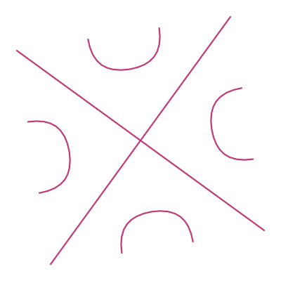

EssayThe Basis of Practical Intellect
I used to think a good argument moved people. Then I watched what happens when the argument is about music and machines, and then I watched it happen to me.
For most of my life I ran on an unexamined assumption about other people. Hand someone a better argument than the one they are holding and they will trade up. Maybe not in the room, and maybe not in front of anybody, but later, alone, when there is no cost to it, they will make the swap and carry on.
I have spent the last several years making music with generative models and talking about that work with musicians. The assumption did not survive.
Disagreement itself is easy and useful, and I have learned things from people who think I am wrong about all of this. What kept catching my attention was that the objection arrived pre-shaped, and it arrived in three flavors.
The first is the technical one. A precise, well-organized argument about training corpora and licensing and consent, delivered with a rigor that would be impressive if the person applied the same rigor to anything else in the conversation. The second is heat. Contempt, sometimes pointed at the tools, sometimes at me, usually with an audience. The third is the flattest one and the one I find hardest to sit with. A shrug. It is over, nothing matters, why bother.
Three temperatures, one shape underneath. In none of the three is the person actually examining the claim in front of them. They are managing what the claim would mean about them if it turned out to be true.
I know that shape well, because I can produce all three of those on subjects where I have something at stake. That is the only reason I can describe them without contempt.
A working mind with a fence around part of it
Here is the part that changed how I think about thinking. The people I am describing are not slow. Many of them are the best musicians I know, and one of them taught me most of the music theory I have. Their minds work. What happens is that a whole region gets fenced off before anything can be considered there, and the fence goes up somewhere they cannot see it going up.
The preclusion of another perspective is functional ignorance. Ignorance in the literal sense, an absence of information, except this absence is manufactured and maintained. The person could follow the argument fine. The argument never gets a hearing, so following it never comes up. And the effect is the same as if they could not follow it, which is to say the fence makes people dumber in a narrow and specific place while leaving them entirely intact everywhere else.
Ego is what builds the fence, and ego is a bad word for a real thing. I mean the accumulated weight of identity, praise history, career exposure, and the political alignment of everyone whose opinion you need. Any one of those is enough to rule a subject out of bounds. Stack all four and the subject is not merely out of bounds, it is invisible.
The bet I lost
I want to be careful about the position I am arguing from, because it would be easy to read all of that as a complaint about other people. So here is mine.
I read Kurzweil in the mid-2000s and made myself do the arithmetic on an exponential instead of nodding at the word. That much I got right, and I was proud of it in the way you are proud of a thing that has not cost you anything yet. What I also held, privately, and never wrote down anywhere I would have to defend it, was a ceiling. A belief about how far a machine could get with the parts of music I care about most.
Then I watched. Will Smith eating spaghetti. An early reconstruction of a Nirvana song called Drowning in the Sun, crude enough that you could hear every seam in it. Both of those were easy to laugh at, and I did. The trouble is that the interesting thing about either one was never its quality. It was the slope. A crude version of an impossible thing is a very different object from no version at all, and the distance between crude and good is a distance these systems close by feeding on their own output.
My ceiling was wrong. Betting against the improvement of a model turned out to be a losing bet, and I had made it. I held it where you keep the opinions you have never had to defend, which is its own tell.
The shape of that is what the story is doing here. I held a position, the evidence went the other way, and I moved. I can also tell you what moving cost, which is the part usually left out of these accounts. It cost me a flattering story about musicians, and I am one, so it cost me a flattering story about myself.
The weld
A person's worth and a person's facility in a language are two different tracks. I have written that out at length elsewhere and I will not rerun it here. The narrow point I want is what happens when someone welds the two together, because that weld is what the fence is protecting.
Once worth and facility are one object, every claim about the facility lands as a claim about the worth. Tell a songwriter that a model can generate a serviceable bridge and you have said nothing about their value as a person, but if the weld is in place, that is exactly what they heard. Defending your worth against attack is what a person is built to do. The mind doing it is doing its job. It is just doing it on a subject where the job is not called for, and it will keep doing it as long as the two things are attached.
This is why the better argument does not work. The better argument is aimed at the facility question. The person is answering the worth question. Both of you leave convinced the other one was not listening, and both of you are right.
What holding this costs
I live in Denver and I play out. The music community here leans hard against this work, for reasons that include the economics, the environmental questions, and a general and reasonable suspicion of anything that arrives promising to make labor cheaper. I understand every one of those reasons. I also stopped bringing the subject up. When I am out playing, I am there to play. I am not there to be an AI thinker.
That restraint is a tax. Holding a position a room has ruled out costs you the ability to be all the way in the room, and you pay it every time or you go find a different room.
The harder part is that I have no way to find my own fences. Nobody does from the inside. The only working instrument I know of is other people, and the design flaw is obvious: the person best positioned to find your blind spot is usually somebody you have already filed under not worth the trouble. There are subjects right now where I am the musician with the pitchfork and I cannot tell you which ones they are. That is the definition of the thing.
What I actually believe now
The ability to genuinely consider a perspective you did not arrive with, and to move if it holds, is the basis of practical intellect. Raw processing sits somewhere else, and plenty of it sits behind a fence doing excellent work in a small yard. The measure I trust now is whether there exists any evidence, even hypothetical, that would move a person, and whether they can name it out loud.
Ask someone that. Ask what would change their mind. The answer, or the absence of one, tells you more in five seconds than an hour of argument will.
These days when somebody tells me I am wrong about this, I make myself say the strongest version of their case back to them before I answer. Most of the time I answer anyway. Once in a while I get to the end of their case and find I have nothing to say.